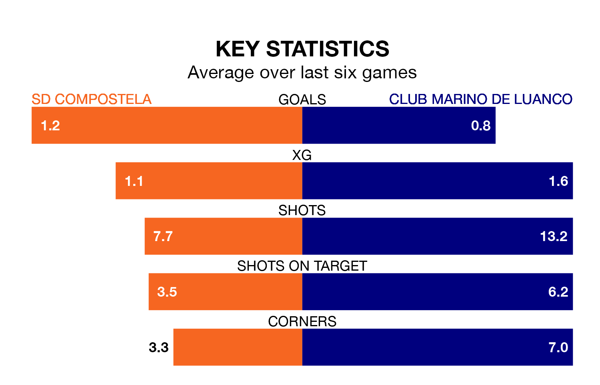

SD Compostela face a challenge to maintain their high-scoring form at home against a tight Club Marino de Luanco defence on Sunday.
With 22 goals in 17 games, Compostela are the joint-third-highest scorers in Segunda División RFEF Group 1 ahead of the 5pm kick-off at the Estadio Multiusos de San Lázaro.
They face a Club Marino de Luanco side who have scored 13 in 17 matches, but conceded only 14 goals, putting them fourth among the league's tightest defences – only Ourense CF, Pontevedra CF and Zamora CF have conceded fewer goals.
Compostela are fifth in the table after 17 games, of which they have won eight and drawn three, earning 27 points.
Club Marino de Luanco are seven places behind the hosts in 12th, with three wins and nine draws putting them on 18 points.
In the last five years, Compostela and Club Marino de Luanco have played each other on seven occasions. Club Marino de Luanco won two of them and they drew five times.
On average, Compostela scored 0.4 goals and Club Marino de Luanco 0.7 in those matches.
Their last meeting was on September 3, when they played out a 0-0 draw.
Compostela are in reasonable form in Segunda División RFEF Group 1, with four wins and two losses from their last six games.
With a win and four draws over that period, the away team's form is worse – they have taken seven points from 18, compared to Compostela's 12.
Compostela's last match was on January 7, a 3-1 win against Racing Santander B.
Club Marino de Luanco drew 1-1 with Covadonga last time out, also on January 7.
Updated: 10:50, 10/01/24